Microfluidics parts supplier
Microfluidics supply for research teams.
Source chips, tubing, fittings, pumps, diagnostic consumables, lab plastics, and OEM parts for research-use workflows.
85 catalog items
Cart and invoice checkout
RUO supply
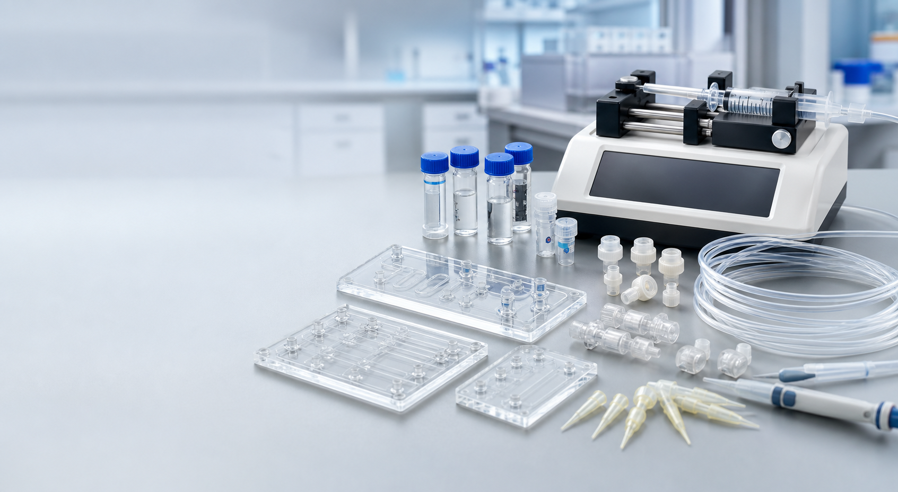
Find parts faster
Start with the part family or the experiment.
01
Chips & lab-on-chip
PDMS, glass, COC, PMMA, mixers, droplet chips
02
Tubing & fittings
PTFE, FEP, PEEK, luer, barbed, compression
03
Pumps & flow control
Syringe pumps, pressure control, valves, sensors
04
Diagnostics consumables
LFIA membranes, pads, cartridges, rapid-test parts
05
Lab plastics
Plates, PCR tubes, vials, reservoirs, pipette tips
06
Sourcing services
Supplier search, OEM match, quote support, kits
07
Design platform
3D microfluidic cartridge layout, cuts, ports, sketches, and export
Online catalog
A practical catalog for microfluidic setups.
Use the catalog as a purchasing shortlist: common parts, simple classification, cart requests, and engineer-guided matching when the compatibility details matter.
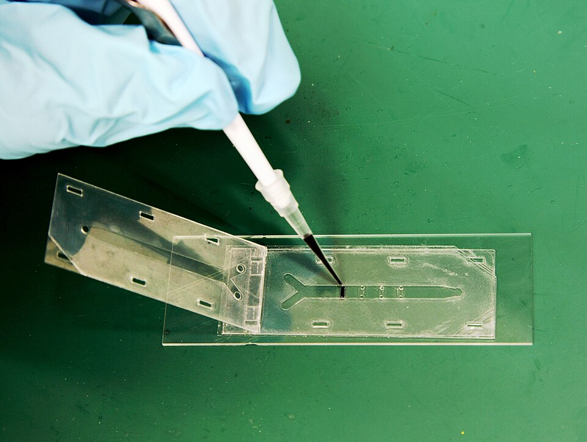
Microfluidics PDMS, glass, COC, PMMA chips, mixers, droplet chips, prototyping. Fluid handling PTFE, FEP, PEEK, silicone tubing, fittings, connectors, manifolds.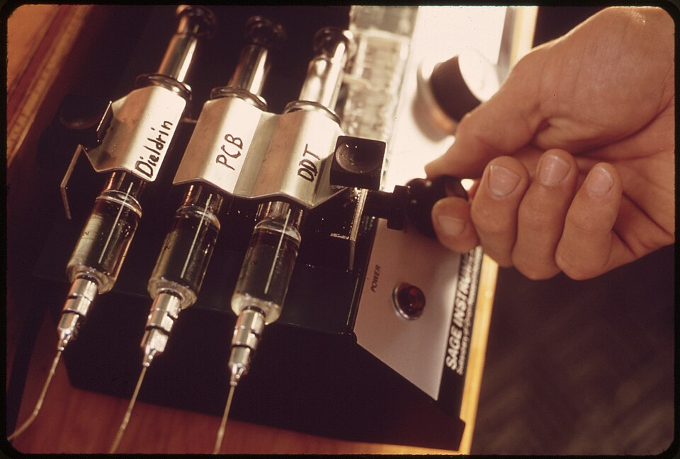
Flow control Syringe pumps, pressure control, valves, sensors, and meters.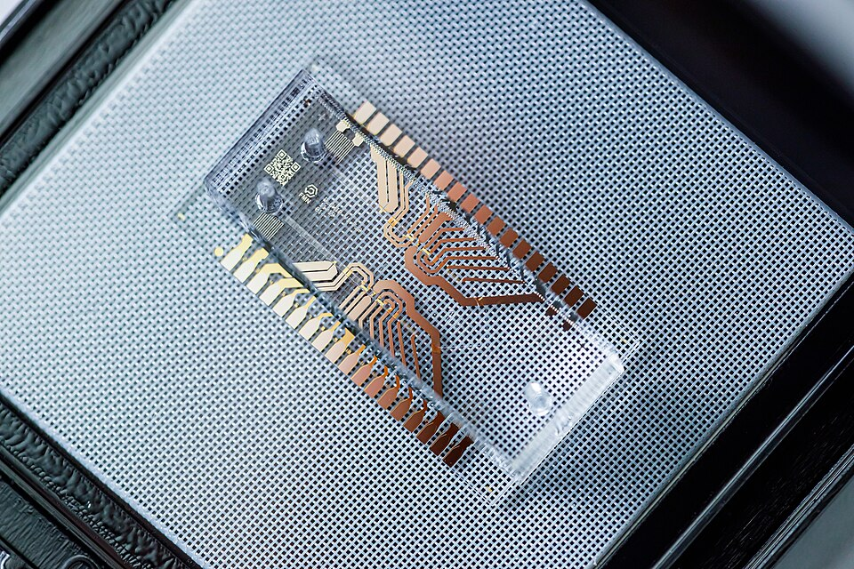
Diagnostics LFIA materials, pads, membranes, cartridges, rapid-test housings.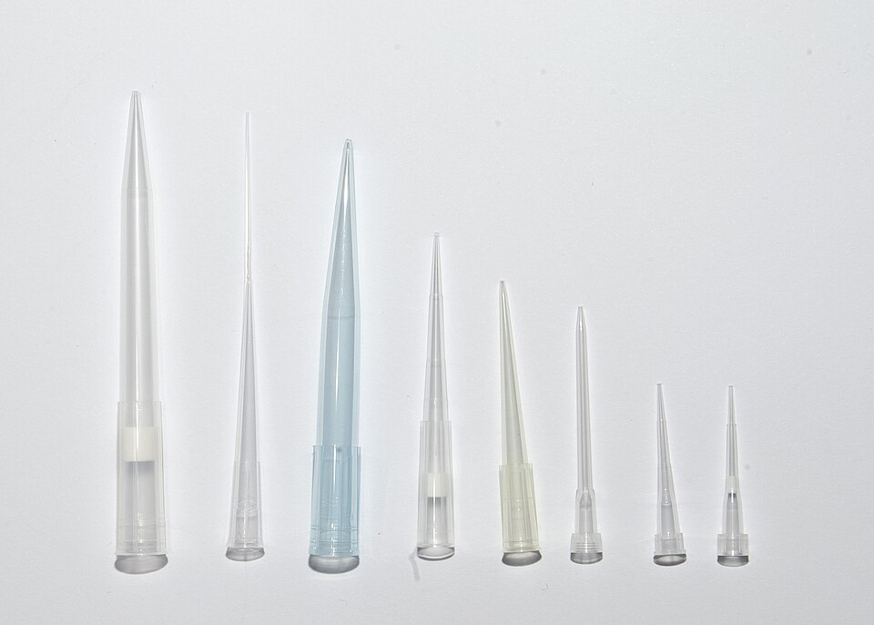
Lab plastics Plates, PCR consumables, tubes, vials, reservoirs, bottles, tips.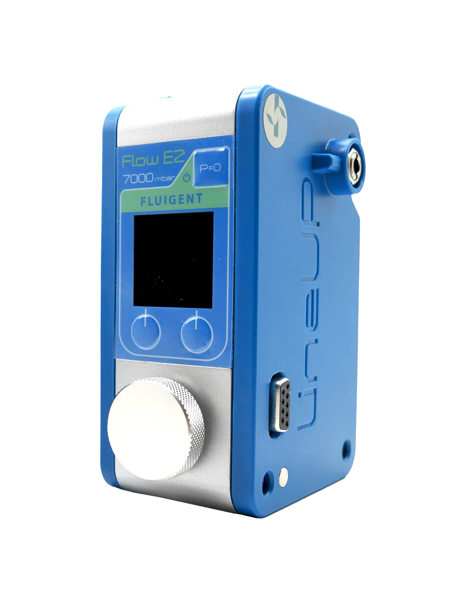
Technical sourcing Supplier search, engineering matching, and diagnostic OEM comparison packages.Browse by application
Choose parts by what you are trying to run.
Supplier sites are easiest when the application is visible. These paths help teams move from an assay or device goal to the right part families.
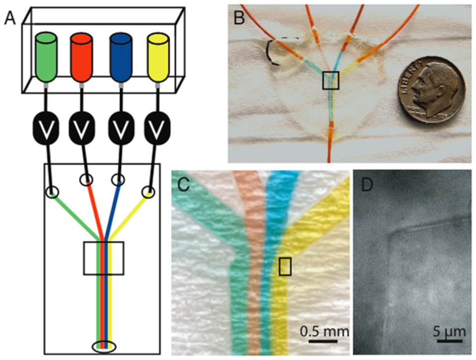
Device and flow-path builds
Pick chips, tubing, connectors, manifolds, and pump style around your channel design and target flow rate.
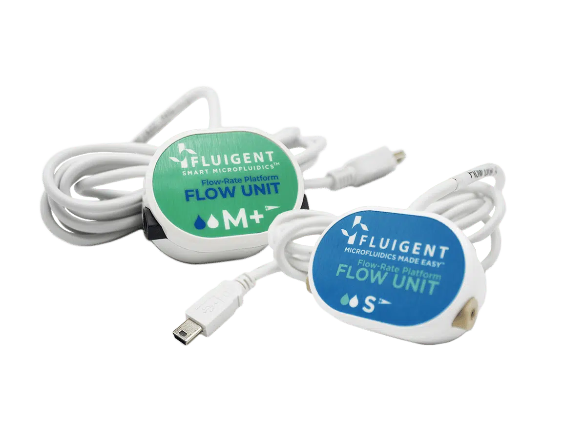
Flow measurement and control
Compare pressure control, sensors, reservoirs, valves, and meters for stable benchtop experiments.
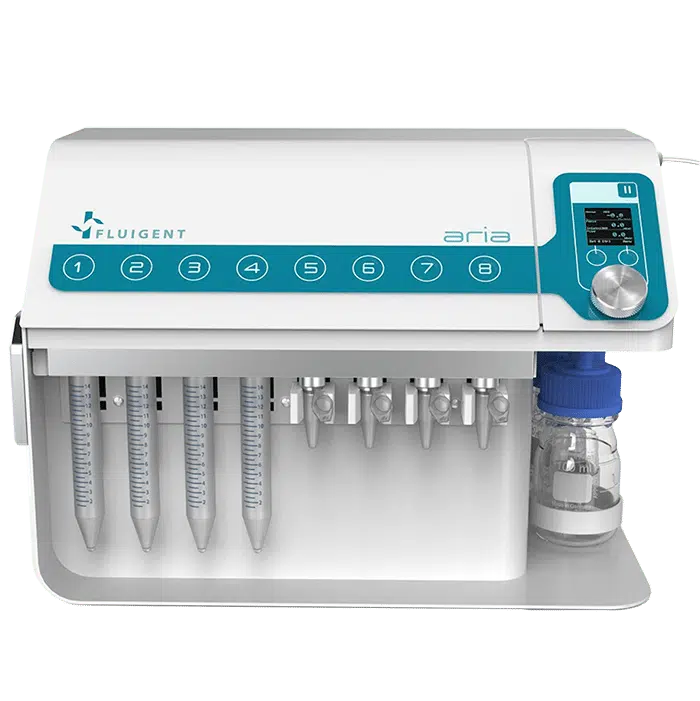
Diagnostics and cell systems
Source LFIA materials, cartridges, perfusion accessories, plastics, and repeat-order consumables.
OEM and device UX support
Turn complicated microfluidic tuning into simple end-user operation.
MicroCD Labs supports OEMs and equipment makers that need microfluidic devices to feel easier for real users. We help translate valves, flow rates, tubing paths, calibration steps, assay timing, and controller settings into clearer workflows for RUO, clinical, and medical-facing environments.
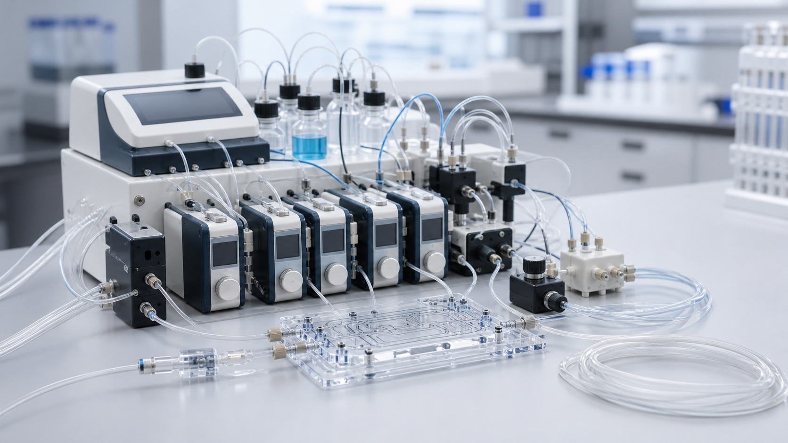
Complex setup
Controller tuning, tubing paths, valves, and assay timing
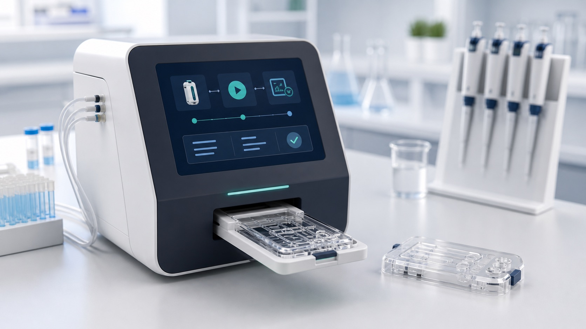
Simplified use
Guided workflows, fewer manual decisions, plug-and-play operation
Engineering-led support
Exceptional engineers helping labs choose, test, and integrate the right parts.
MicroCD Labs brings hands-on microfluidics, diagnostics, assay development, and product engineering experience to practical sourcing. If you know your flow rate, tubing size, solvent, chip type, or instrument interface, include it in the order request. Our engineers can help narrow the options and prepare a sensible parts list for your research setup.
Engineer-guided part matching
Match components using your flow rate, solvent, connector, and assay notes.
Test-ready starter bundles
Package chips, tubing, connectors, and pump options for early microfluidic trials.
Technical procurement support
Prepare quote details, material notes, compatibility checks, and order information.
Ordering clearly
Research supply with careful handling for regulated areas.
Research-use positioning
Catalog items are described for non-clinical research use.
Import and export checks
International orders are quote-only so paperwork and end-use can be reviewed.
Supplier traceability
Quotes can include manufacturer, material, data sheet, and compatibility notes where available.
Cart and checkout
Build your order request
Add catalog items in the store, then send the request with your lab details. MicroCD Labs confirms availability, final price, shipping, and compliance before sending a secure payment link or invoice.
Contact
Talk to MicroCD Labs
For quote requests, supplier discussions, and microfluidic parts questions, send a note with the item, quantity, material requirements, and timeline.
MicroCD Labs, a division of Karigari Home LLC
info@microcdlabs.com
+1 775 248 8317
LinkedIn
732 6th. St #7328, Las Vegas, NV 89101